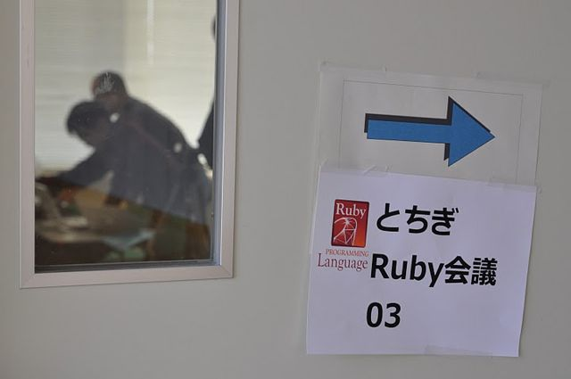
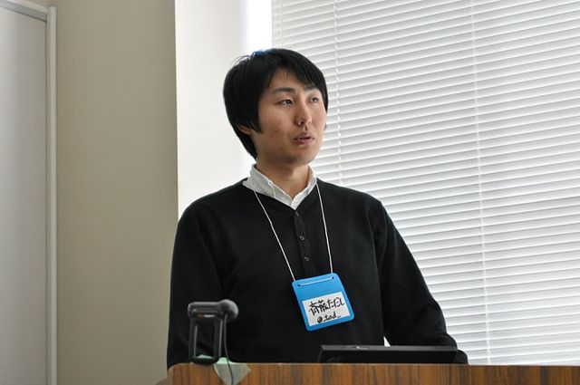
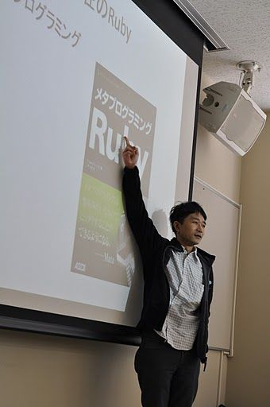
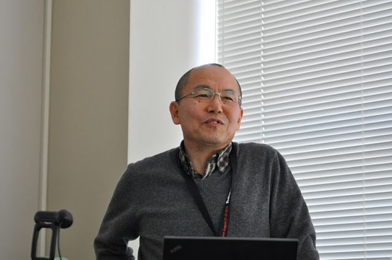
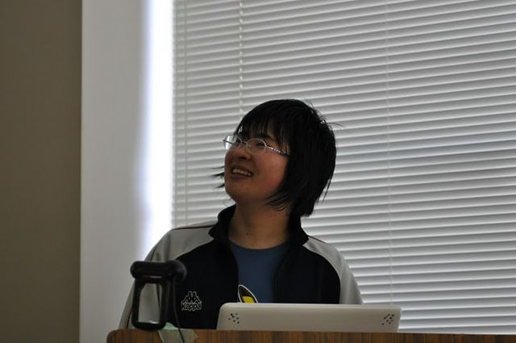
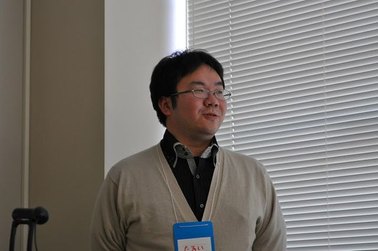
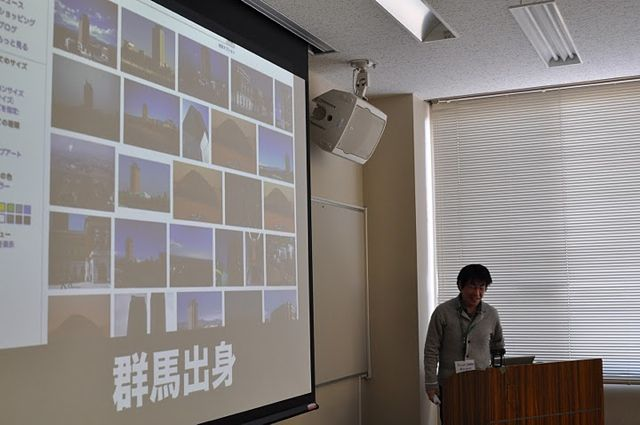

RegionalRubyKaigi レポート (19) とちぎ Ruby 会議 03
Regional RubyKaigi レポート とちぎ Ruby 会議 03
はじめに
順番が前後しますが、最後の中内実行委員長の挨拶も引用しながら、とちぎ Ruby 会議 03 が開催に至るまでを紹介します。
とちぎ Ruby 会議 03 の運営母体である「とちぎ Ruby の勉強会」の第一回が開催されてからほぼ 4 年になります。この間、月に一回の「いつものとちぎ Ruby の勉強会」は、2 月の回をもって 50 回開催されました。また、拡大会、Regional RubyKaigi を合わせた、いつもよりも大きめの会も 6 回行われました。
その 50 回を記念して何か開催しようという話が出て、そこから、03 をやろうという流れになりました。50 回記念ということで、還暦を迎えられた、とちぎ Ruby の池澤さんと、とちぎ Ruby 会議 03 直前に最年少コミッターになった、栃木県の sora_h 君の年の差約 50 歳のコラボを行いました。
- 50 回目を記念したイベントではありますが、「ふつうの toRuby を体験してもらう」という、趣旨で開催しました。参加された方々にも楽しんでもらえた会にできたのではないかと思います。
- 
とちぎ Ruby 会議 03 について
- 開催日: 2011/02/26 (土) 13:00〜16:45
- 開催場所: 西那須野公民館
- 開催母体: とちぎRubyの会 (toRuby)
- 後援: 日本 Ruby の会
- 参加者: 38人
- 動画・資料:
- リンク
振り返り
- まずはとちぎ Ruby 会議が始まる前に、いつもの toRuby のメンバーが集まって、50 回の振り返りをしました。「あのイベントの時はあの人が来てくれたんだよね」とか、「ここで○○さんが toRuby に来るきっかけになったんですよね」など、多くの話題が出ました。このような場っていいですよね。改めて、とちぎ Ruby の歴史の長さを感じることができました。

一般講演
詳解！ Decimal (斎藤ただしさん)
茨城の Tsukuba.rb から来られた斉藤ただしさんからは、Decimal クラスの紹介がありました。Decimal クラスというのは、多倍長十進小数演算です。まるめ誤差が発生する仕組み、多倍長の計算に興味を持ったきっかけ、Decimal クラスの設計、実装についての説明がありました。
多くの人が感心を持っていたのが、興味を持ったきっかけです。「円周率が無限に続く」という小学校の授業の説明に対して、「本当に無限に続くことが証明できるのか」と疑問に思ったところがスタートとのことでした。C 言語で計算を試みるも、固定長の小数計算の限界にぶつかり、多倍長に興味を持ったとのことです。Ruby 1.9 の BigDecimal の実装についても、色々意見を出されたそうです。
斉藤ただしさんのメンテされている Decimal クラスは、他の Numeric クラスとの親和性を大切にしつつ、Ruby 本体の最適化が効きやすいシンプルな構造にすることで、既存の BigDecimal よりも効率が高いプログラムができたそうです。
質疑では、「いつバージョンが 1.0 になるのか？ 1.0 にならないと使われない」という質問に対して「リリースは近い」と回答されていました。最初はちょっと堅い感じがしましたが、徐々にヒートアップされていったのが印象的でした。
- :

- 
ぼくとわたしの Vim && 詳解！ parallel_test (sora_h さん)
この 2 月に Ruby 界隈を賑わせた話題としては、sora_h さんの最年少 Ruby コミッター就任でしょう。その sora_h さんが、自分の開発環境の好きな開発環境として、Vim の紹介があり、その後、隠し球としてコミッターに就任するきっかけとなった、並列テストの話がありました。
Vim は拡張することで、さまざまな機能が追加されるエディタです。vim-users.jp のレシピから、Ruby 向けのレシピをピックアップされていました。紹介があったのは、vimshell、すばやく実行するための quickrun、repl.vim、以前の物よりも速度が早い補完機能を実現する neocomplcache、コードの構造を分かりやすくしてくれるのでコードリーディングに便利という unite-outline などです。
Ruby のパラレルテストを実装しようとしたきっかけは、「Ruby のテストが遅い」のを改善したいと思ったからです。中を見て、「タイムアウト待ちのテストの時間がもったいない」と考えたそうです。札幌の mrkn さんのアドバイスをもらいつつ、パラレルテストを実装し、移植性の問題や、パラレルにしたことで動かなくなるテストを一つずつ改善していったそうです。並列実行はワーカーモデルで、中央のプロセスがワーカーに対して IO.pipe 経由で指示を出したり結果をもらったりするそうです。実際に -v を付けて実行し、BigDecimal と CGI のテストが並列で行われている様子が紹介されました。
堂々とした話っぷりで、大人顔負けのプレゼンでした。sora_h さんがプログラミングを始めたのは小学生の 4、5 年のころだそうです。我が子に最年少コミッターの記録を超えさせたいパパさんは 5、6 歳から始めるといいかもしれません。ところで、sora_h さんが自己紹介で「プレイしている」と言っていたゲームのレーティングって・・・？
- :


10 年前の Ruby、10 年後の Ruby (それでも石は廻っている) arton (田島あきお) さん
最初の toRuby 拡大版で、HTML ベースの Ruby アプリケーション (Windows用) の紹介をしてくれた arton さんが、再び栃木の地で発表してくださいました。
10 年前の Ruby からの変遷の紹介がありました。10 年前の Ruby のウリは、国産でも何でもなく、「オブジェクト指向スクリプト言語」でした。スクリプト1でも本格的にオブジェクト指向ができる、ということで多くのプログラマの心を掴みました。現在は「DSL」や「メタプログラミング」が前面に出ることが多いのですが、最初の書籍でも実は「jcode を require すると String の挙動が変わる」といった、最近の話題に繋がる説明がこそっと書かれていたそうです。
arton さんの考える「10 年後の Ruby」は、まだ分からないということでしたが、メタプログラミングなどのように、何がブームになっても Ruby はそれをサポートして多くの人を受け入れるプラットフォームになる、ということを説明されていました。
arton さんが後半で説明されていたのは「おもちゃ」であることの大切さです。気軽に手に入れて、作ったり壊したり、不足感に対して、想像力とやる気で世界を広げるためのきっかけとなるのが arton さんの「おもちゃ」の条件です。完成しきった「家電」との対比で、プログラマの想像力をかき立てる道具としてのコンピュータについて熱く語られていました。
: 
リファクタリングの感情 越水智之さん
toRuby でも独特な雰囲気を持ち続けている tko こと越水さんの発表で、内容も独特なものでした。
まずはリファクタリングを巡る様々な感情についての紹介がありました。越水さんがリファクタリングが必要なコードを見たときに、最初に覚える感情は「怒り」だそうです。これが燃料となるそうです。その後は「悲しみ」、「哀れみ」、最後に「慈悲」を感じるとのことです。経験のあるプログラマーほど「きまぐれ」と言われるのは、「コードを見たときに感じる気持ちが強く、感情が乱されるからだろう」と考察されていました。また、Kent Beck が「どうしたらリファクタリングをマスターしたと言えるのか」と聞かれたときに「諦観」という言葉を使って説明した、ということも紹介されていました。
- 後半は急に雰囲気が変わり、日本の Ruby 界のイケメン紹介でした。資料は公開されるのでしょうか？ もし「自分はイケメンだと思うのだけど、紹介されなかった」と苦情のある方は、とちぎ Ruby の事務局まで。

50 回をふりかえって 池澤一廣さん
まず、池澤さんが普段されている仕事の紹介がありました。Excel を使ってアニメーションを見せながら、データ解析を見せるという「Excel 芸」や、大規模なデータの処理などです。ネタ晴らしはなかったのですが、恐らく Excel 芸は Ruby から COM 経由で Excel を操作していて、大規模なデータも池澤さんが作成されている Ruby 製の統計分析ツールの成果だと思われます。
50 回目を迎えた toRuby ですが、1 回目が始まる前の、池澤さんと咳さんの歴史的会談 (西那須野の 4 号沿いのモスバーガー) からちょうど 4 年ちょっとになります。それから現在まで、毎月勉強会が開催されてきましたが、KPT、ポジペ、実践的な「動かしてみる」といったことを池澤さん自身が学ばれると同時に、同じエートスを共有するコミュニティであるということを説明されていました。
池澤さん自身の振り返りとして、00 年代は今までの 50 年間を超える、濃い 10 年だったそうです。演劇、ダンス、社会学、toRuby。さまざまなことに挑戦しつつも、いろいろな所で、同じような相似形のものが見えていたそうです。10 年代は「救世主は現れない」「自分達で自分達の生きやすい世界を作るしかない」ということを 00 年代からの学びで感じられているそうです。toRuby はそのための実験であり、今後挑戦していくことは「eXtreme Social Design」だそうです。
- 最後に、還暦を迎えられた池澤さんに対して、お花が贈られました。おめでとうございます。
- 
ライトニングトークス
track8 さん / “Darkness on the Edge of Gunma”
群馬で Ruby の勉強会「guRuby」を主催されている、track8 さんの発表です。懇親会でも track8 さんの同僚も来られていて、群馬でも確実に人の輪が広がっていっているのを感じました。
まずは、track8 さんがとちぎ Ruby に来られた「接触編」です。距離的に行けないこともないということで、とちぎ Ruby に興味を持ったものの、toRuby の KPT の記録に「Keep: 催眠」とあって、怖くて来られなかったそうです。そこで、「多く人の集まるとちぎ Ruby 会議 01 なら大丈夫だろう」ということで、そこで初めて参加されました。ちなみにこの催眠というのは http://mentane.net/ が主催する催眠講座のことで、それをポジペで紹介したというお話でした。
それから、今年の Ruby 会議での池澤さんのがんばりを見て、guRuby を開始する「発動編」の紹介がありました。既に 6 回開催されていて、地元の仲間もできたそうです。50 回まであと 44 回だそうです。
: 
リック・サンダースさん / “去年の社会人一年生の Ruby 研修”
社会人 1 年生のリックさんの発表でした。リックさんが挑戦されて、成長のきっかけになったのが、ポケモンカードの大会の日程を調べるツールだそうです。本家のサイトが使いにくかったということで、ウェブの情報をスクレイピングして、検索しやすいツールを作られたとのことでした。他の人にも使ってもらえるように、 Windows の GUI のツールに仕上げ、技術面はもちろんのこと「意見をいただくことのありがたさ」「できないことはできない」「役に立てるのはうれしい」と、社会人との飛躍ができたという発表でした。
実は toRuby 以外ではあまり知られていなかった、咳さんのもう一つの顔が ust を通じて世界に発信された、歴史的 LT となりました。
: 
Glass_sagaさん / “Reudy on Ruby1.9”
人工無能の Reudy の 1.9 対応と、より Ruby らしく動作するようにといったリファクタリングをしたという報告でした。Reudy の動作の原理の紹介があり、いかに人間的な振る舞いをするのか、ということを丁寧に紹介されていました。
- 一番聞いている人達が湧いたのは、Twitter で自分が follow から外された時にそれを通知する、「りむられったー」だった気がします。

坪井創吾さん / “王子様本の Ruby1.9 対応を調べる”
咳さん研究家の坪井さんの発表でした。咳さんから「Ruby 1.9 対応を調べてくれない？」と聞かれた坪井さんは、「改訂→売り上げアップ」「とちぎ Ruby のコミュニティを拡大する」という裏の要件・ミッションを感じ取った坪井さんは、さまざまな現代的な技術を駆使して、王子様本 (dRuby 本) から、ソースコードの抽出に挑戦した、というお話でした。結局、坪井さんは何冊 dRuby 本を買われたのでしょうか？
: 
樽家昌也さん / “Ruby と構文解析と私”
「実は半分のプログラマーは構文解析をしたことがある」という前提のもと、構文解析周りの紹介をされていました。Ruby には字句解析の定番はなく、正規表現の strscan を使うことが多いとのことでした。そこで様々な改善に取り組み、C バックエンドの Rex、再帰下降型の PEG などを使われたと言うことで、メリットやデメリットなどを紹介されていました。
: 
五十嵐邦明 (igaiga) さん / “北陸.rb x 高専カンファレンス - 学生さんと一緒に Ruby イベントを つくっている”
前回のとちぎ Ruby 会議でタイマーを提供してくださった、タイマー職人のいがいがさんの発表です。いがいがさんは、高専生を中心とした「高専カンファレンス」に積極的にコミットされています。なかなかシャイで外に出てくるのが敷居の高い高専生が、最初に参加する勉強会となり、高専生とコミュニティを繋ぎたい、というのが動機だそうです。高専生が聞きたいと思っている話は、学校の先生では話がしにくい「社会人の転職話」だそうです。
当日は、EM 高専というフリーペーパーも配布されました。勢いがありますね。
: 
ふつうの勉強会
: 
とちぎ Ruby 伝統の、ふつうの勉強会です。今回はとちぎ Ruby 会議スペシャルということで、「Ruby レシピブック 303 の技」を教科書に、執筆者の高橋さん自らの朗読で行われました。一番揉めそうな所ということで、ソースコードの文字コードのレシピと、Float の丸めのレシピを使って勉強会をしました。
まずはレシピ 19 のソースコードの文字コードの解説でした。1.8 では文字コードをあまり厳密に扱ってこなかったそうです。1.9 からはここに手が入り (リリース直前まで色々揉めていたような？)、Emacs などと同じようなマジックコメントを使って指定するようになりました。1.9 からは「指定されたコードでは表現できないはずの文字が出現したら、エラーとする」といったように、処理が厳密になったそうです。このような本に書かれていない所まで解説がありました。
- お次はレシピ 149 の数字の丸め。ここでは「このような丸めを Float で行うのはおかしい」といった指摘があったり、すべてを受け流すことなく意見を聞く高橋さんの姿が印象的でした。それなりに時間をとって行いましたが、4 ページしか進んでいません。小さいところで大きく盛り上がるのはとちぎ Ruby の「ふつう」の姿です。toRuby のふつうが多くの方に伝わったのではないか、と思います。


執筆、編集者
- 渋川よしき
- 米澤慎
- 佐々木揚
- 中内章一
写真提供
- 佐々木揚
-
当時 LL という呼び名はありませんでした ↩